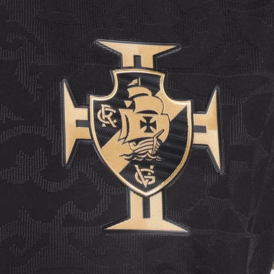
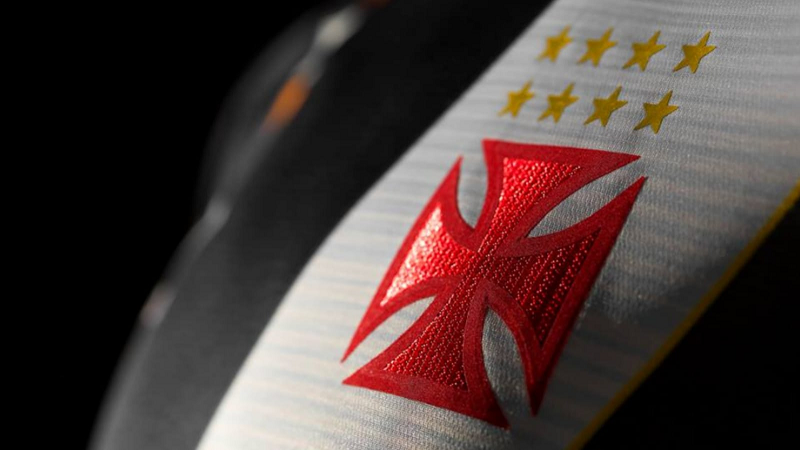
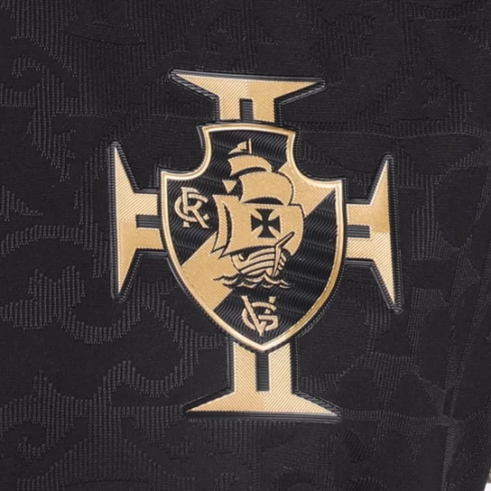
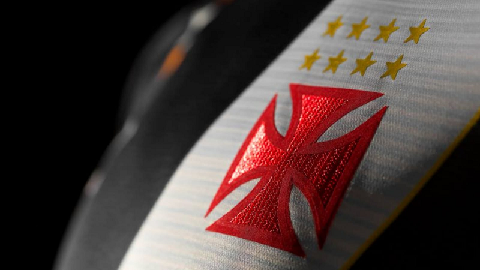

Sobre a clube
Fundado em 1898, sob nome de Club de Regatas Vasco da Gama, a instituição surgiu como praticante do remo. Por lá, a bola só começou a rolar em 1916, por influência de Raul Campos. Assim como os demais portugueses que vinham ao Brasil na época, ele chegou com o objetivo de ingressar no clube carioca. O clube amado por todos possui alguns apelidos como por exempo: Gigante da Colina Cruzmaltino Legítimo Clube do Povo Expresso da Vitória Camisas Negras Time da Virada Time do Amor Trem-Bala da Colina Campeão de Terra e Mar Time do Rei / da Rainha. O lugar que o Vasco da Gama ocupa na elite do futebol brasileiro tem a marca gloriosa do time conhecido como os camisas negras que, em 1923, com uma campanha arrasadora (11 vitórias, dois empates e apenas uma derrota), conquistou o primeiro titulo de campeão carioca de sua História, O Cruz-Maltino possui três conquistas internacionais e 38 troféus domésticos, entre torneios estaduais, interestaduais e nacionais.
hino
Vamos todos cantar de coração A cruz de malta é o meu pendão Tu tens um nome do heróico Português Vasco da Gama, a tua fama assim se fez Tua imensa torcida é bem feliz Norte-Sul, norte-sul deste Brasil Tua estrela, na Terra a brilhar Ilumina o mar No atletismo és um braço No remo és imortal No futebol és o traço De união Brasil-Portugal No atletismo és um braço No remo és imortal No futebol és o traço De união Brasil-Portugal Vamos todos cantar de coração A cruz de malta é o meu pendão Tu tens um nome do heróico Português Vasco da Gama, a tua fama assim se fez Tua imensa torcida é bem feliz Norte-Sul, norte-sul deste Brasil Tua estrela, na Terra a brilhar Ilumina o mar No atletismo és um braço No remo és imortal No futebol és o traço De união Brasil-Portugal No atletismo és um braço No remo és imortal No futebol és o traço De união Brasil-Portugal
Idolo
Roberto Dinamite Roberto Dinamite (1971 a 1979; 1980 a 1992) Foi autor de mais de 700 gols pelo Cruz-maltino. A lenda de Dinamite como jogador transcende o futebol e tornou-se um símbolo do amor e dedicação ao Vasco, sendo uma figura que sempre será reverenciada na história do clube.